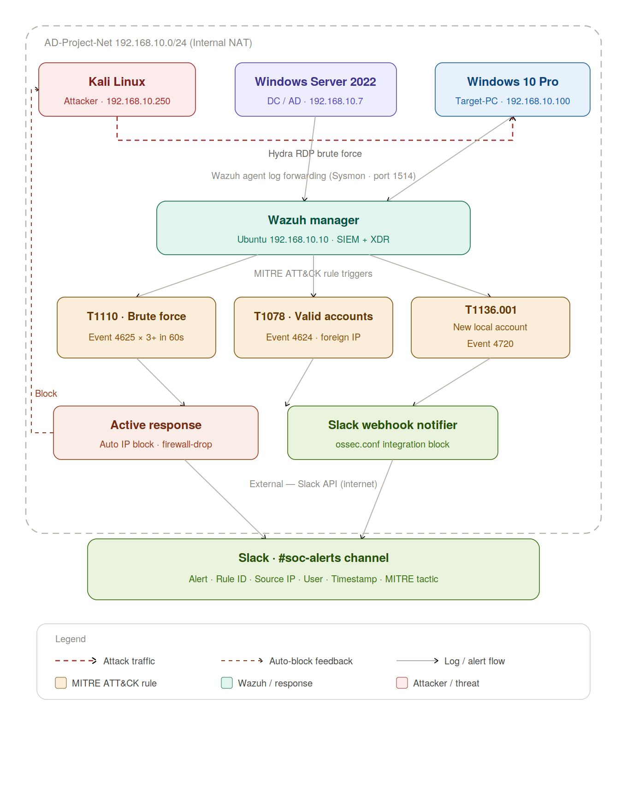

SOC Automation with Wazuh & Slack
Building an automated Security Operations Center pipeline with Wazuh SIEM, Active Directory, MITRE ATT&CK detection rules, Slack alerting, and automated active response for real-time threat blocking.
Lab Overview
Objective
This project builds on my previous Active Directory lab by replacing passive logging with an active, automated SOC pipeline. Instead of just collecting logs in Splunk and manually hunting threats, I deployed Wazuh as a SIEM + XDR platform with built-in MITRE ATT&CK rule mapping, configured automated active response to block attackers in real-time, and integrated Slack for instant alerting to a #soc-alerts channel. The goal was to simulate a real SOC workflow where detection, blocking, and notification all happen automatically without human intervention.
Lab Topology
The diagram below shows the complete pipeline: the three Windows/Kali VMs on the internal NAT network, the Wazuh manager on Ubuntu, the MITRE ATT&CK rule triggers, the active response auto-block loop back to the attacker, the Slack webhook notifier, and the final #soc-alerts Slack channel.

Virtual Machines
Four virtual machines were built on VirtualBox and connected via an internal NAT network named AD-Project-Net (192.168.10.0/24). Each machine was assigned a static IP to match the planned topology.
| OS | Role | IP | Specs |
|---|---|---|---|
| Windows 10 Pro | Target machine | 192.168.10.100 | 4GB · 2 cores · 50GB |
| Windows Server 2022 | Domain controller | 192.168.10.7 | 4GB · 2 cores · 50GB |
| Kali Linux | Attacker machine | 192.168.10.250 | 4GB · 2 cores · 50GB |
| Ubuntu Server | Wazuh SIEM | 192.168.10.10 | 8GB · 2 cores · 100GB |
The Ubuntu server IP was configured by editing /etc/netplan/00-installer-config.yaml — DHCP was disabled for both IPv4 and IPv6, the static address set to 192.168.10.10/24, DNS set to 8.8.8.8, and sudo netplan apply run to commit.
Building Active Directory
Active Directory Domain Services was installed on Windows Server 2022 and the server was promoted to Domain Controller. Two organizational units were created along with two test users — John Smith and Terry Smith — to simulate a real corporate directory. The Windows 10 target machine was then joined to the domain.
A DNS issue arose when switching the target machine's DNS from 8.8.8.8 to the DC at 192.168.10.7 — the setting kept reverting on every reboot. Running netsh winsock reset, netsh int ip reset, and flushing DNS all failed. The fix was found inside the registry editor where a stale entry was overwriting the network config — once changed there the domain DNS held correctly.
Attack Simulation
On the Kali machine the attack directory was set up and Crowbar installed as the initial RDP brute-force tool. A passwords.txt wordlist was assembled — 20 entries from rockyou.txt plus a few custom additions at the bottom. Crowbar failed entirely due to the Windows firewall blocking the connection even after confirming the RDP port was open with Nmap and adding both users to the Remote Desktop Users group. Switched to Hydra:
hydra -l tsmith -P passwords.txt rdp://192.168.10.100The custom password added to the bottom of the wordlist successfully cracked Terry Smith's account. Hydra returned a confirmed valid credential pair.
Detection in the SIEM
Searching the endpoint index in the SIEM for the affected account (index=endpoint tsmith) surfaced three key Windows Event IDs that tell the full story of the attack:
Event 4625 — Failed Logon
Appeared in high volume — multiple rapid failures from the same source IP confirming the brute-force pattern. This is the primary T1110 trigger.
Event 4624 — Successful Logon
Confirmed the credential was cracked. Reviewing the network information field showed Kali's IP address (192.168.10.250) as the source — a foreign machine on the subnet, the clearest indicator of unauthorized lateral movement. Maps to T1078.
Event 5379 — Credential Manager Read
Appeared alongside the successful logon, indicating post-authentication credential harvesting activity.
Atomic Red Team Testing
Atomic Red Team (built by Red Canary) is a library of small repeatable attack simulations mapped directly to the MITRE ATT&CK framework — the same framework used in real-world threat modeling. It was force-installed on the Windows target via PowerShell.
A T1136.001 (Create Account: Local Account) simulation was executed. Switching back to the SIEM and reviewing the parsed logs, the NewLocalUser field appeared in the event data, confirming end-to-end detection of the persistence technique.
Wazuh Installation and Configuration
With the attack surface proven, the next phase replaced passive logging with an active detection and automated response pipeline. Splunk was replaced by Wazuh, which adds native active response, a built-in MITRE ATT&CK rule library, and a Slack integration — all from a single manager install.
The Wazuh manager was installed on the Ubuntu server (192.168.10.10) via the official apt repository. On both the Windows 10 target and the Windows Server 2022 DC, the Wazuh agent was deployed and registered back to the manager using ossec-authd on port 1514. The existing Sysmon configuration from the original project was kept exactly as-is — Wazuh ingests Sysmon and Windows Event Log channels natively through the <localfile> block in ossec.conf on each agent.
MITRE ATT&CK Rule Mapping
Wazuh ships with a ruleset that already maps a large portion of Windows events to MITRE ATT&CK techniques. Three rules were customized based on the attack behavior observed during the project:
T1110 — Brute Force
Trigger: Event 4625 — 3 or more failures from the same source IP within 60 seconds
Wazuh's default frequency rule was tuned from 5 down to 3 attempts given the small lab environment. Tagged mitre.id: T1110. This is the rule that triggers the active response firewall block.
T1078 — Valid Accounts
Trigger: Event 4624 — successful logon where source IP falls outside 192.168.10.0/24 or matches 192.168.10.250
A custom decoder extracts the IpAddress field from the 4624 event. A rule fires when the address is the known Kali IP or any address outside the trusted subnet. This catches the post-brute-force successful logon. Tagged mitre.id: T1078.
T1136.001 — Create Local Account
Trigger: Event 4720 — new local account created on any monitored endpoint
Wazuh detects 4720 out of the box. A group tag account_creation was added and the rule mapped to mitre.id: T1136.001 so it surfaces cleanly in the Wazuh dashboard. This is the exact event generated by the Atomic Red Team simulation. Does not auto-block but always fires a Slack alert tagged as a persistence technique for manual triage.
Slack Webhook Integration
A Slack integration block was added to ossec.conf on the manager. The webhook URL points to the #soc-alerts channel. Severity threshold set to level 10 so only meaningful alerts fire a notification — the three custom rule IDs are also pinned directly so even a low-count brute force still pages the channel:
<integration>
<name>slack</name>
<hook_url>https://hooks.slack.com/services/YOUR/WEBHOOK/URL</hook_url>
<level>10</level>
<rule_id>100100,100200,100300</rule_id>
<alert_format>json</alert_format>
</integration>Each Slack message that fires contains: alert type, Wazuh rule ID, source IP, affected username, timestamp, and MITRE tactic — everything a tier-1 analyst needs to triage the event without logging into the dashboard.
Active Response — Automated IP Blocking
For the T1110 brute-force rule, Wazuh's built-in firewall-drop active response script was enabled in ossec.conf on the manager:
<active-response>
<command>firewall-drop</command>
<location>local</location>
<rules_id>100100</rules_id>
<timeout>180</timeout>
</active-response>When the rule fires, the Wazuh manager pushes an iptables DROP command to the agent running on the target machine. The offending source IP — Kali's 192.168.10.250 — is blocked at the host firewall for 180 seconds. This means the connection is severed before a fourth attempt can land, and the block happens automatically with zero manual intervention.
Simultaneously the #soc-alerts Slack channel receives the full alert message within a few seconds of the trigger: the blocked IP, the rule that fired, the MITRE tactic (T1110 — Credential Access), and a timestamp. The on-call analyst gets a notification on their phone before the attacker can even retry.
End-to-End Alert Flow
Here's how the entire automated response pipeline works from attack to notification:
| Step | What Happens | Component |
|---|---|---|
| 1 | Hydra fires 3 failed RDP attempts in < 60s | Kali Linux |
| 2 | Event 4625 × 3 detected, T1110 rule fires | Wazuh manager |
| 3 | firewall-drop pushes iptables block to target | Active response |
| 4 | Slack alert sent: IP, rule, MITRE tactic | Slack webhook |
| 5 | Attacker is blocked; analyst reviews #soc-alerts | #soc-alerts channel |
| 6 | Successful logon 4624 fires T1078 alert | Wazuh + Slack |
| 7 | Atomic T1136.001 fires persistence alert | Wazuh + Slack |
Takeaways
This project demonstrated the difference between passive logging and active defense. Splunk is great for hunting, but Wazuh brings automated response, MITRE ATT&CK mapping, and real-time alerting into a single platform. The automated IP blocking and Slack integration mean that attacks are stopped and escalated to analysts without anyone needing to be logged into a dashboard.
Building this pipeline taught me how real SOC workflows operate — detection rules map to MITRE techniques, active response handles containment, and alerting routes events to the right people based on severity. If you're working toward a SOC analyst or detection engineering role, I highly recommend building an end-to-end automation lab like this. It's one thing to know how a SIEM works — it's another to wire up the entire detection-to-response pipeline yourself.